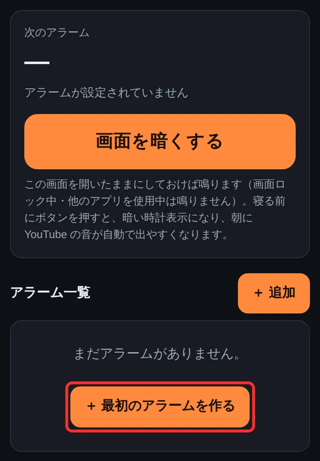
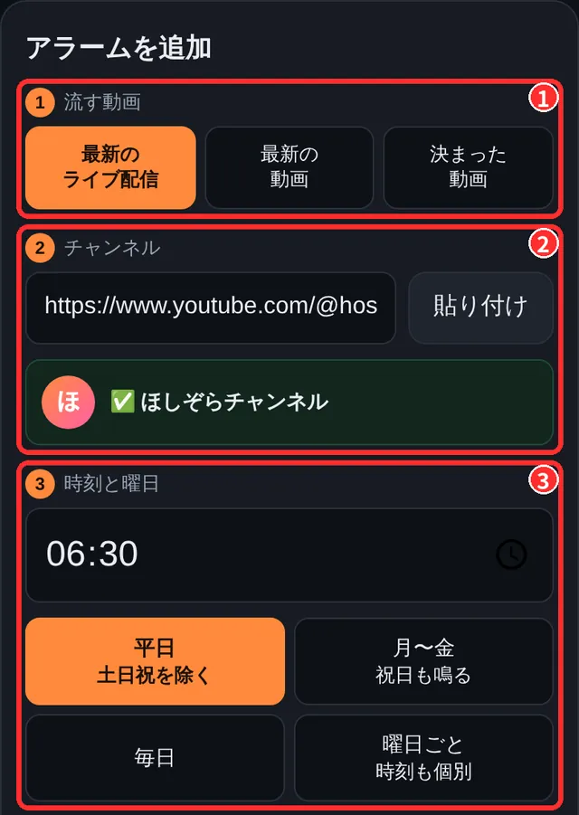
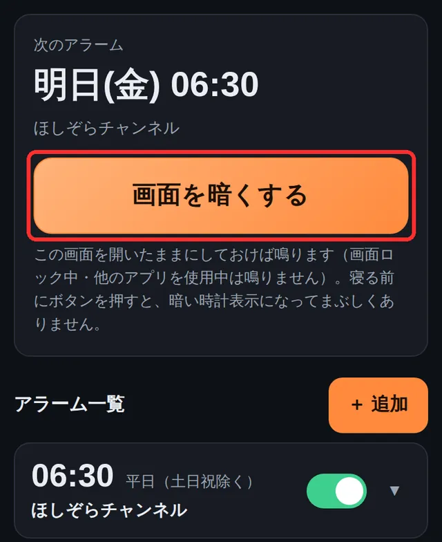

起きた瞬間から、好きな人と一緒。
流す動画は、チャンネルごとに3種類から選べます。
推しの朝配信で起きる
「最新のライブ配信」なら、いま配信中のライブを流します。配信がない日は、直近のライブ配信のアーカイブを流します。
新しい動画をいち早く
「最新の動画」なら、そのチャンネルのいちばん新しい動画が流れます。新作を朝いちばんにチェックできます。
お気に入りの1本で
「決まった動画」なら、好きな歌や応援メッセージなど、毎朝同じ動画で起きられます。
ニュースや音楽にも
推しのほかにも、ニュースのライブ配信や好きな音楽チャンネルで。平日と休日で分けて設定できます。
3ステップで、今夜から。
アプリのダウンロードや会員登録はいりません。
1アラームを作る
ページを開いて「＋ 最初のアラームを作る」をタップします。

2推しと時刻を選ぶ
流す動画の種類とチャンネル、時刻・曜日を選んで保存。チャンネルは YouTube の「共有」→「リンクをコピー」で貼り付けるだけです。

3開いたまま寝る
寝る前に「画面を暗くする」を押して、画面を開いたまま充電しておきます。時刻になると推しの YouTube が流れます。

朝にうれしい機能
はじめる前に
本当に無料ですか？
はい。すべての機能を無料で使えます。会員登録やアプリのインストールもいりません。
どの端末で使えますか？
iPhone（Safari）と、パソコンのブラウザ（Chrome・Edge・Safari など）で動作を確認しています。
iPhone では Safari 専用です。LINE や Chrome の中で開いた時は、自動で Safari に切り替わります。
画面をロックしても鳴りますか？
画面ロック中は YouTube を流せないため、アプリの画面を開いたまま（充電しながら）お休みください。寝る前に「画面を暗くする」を押すと、まぶしくない時計表示で待機します。
iPhone では ⚙設定の「画面ロック中も、アラーム音で起こす（実験的）」をオンにすると、ロック中でも時刻にアラーム音が鳴り、ロックを解除すると YouTube が始まります（電池を多く使います）。
マナーモードでも鳴りますか？
鳴ります。ただし、本体の音量が0の時は鳴りません。
YouTube の音が出ないことはありますか？
iPhone では、操作なしで音つきの再生ができない場合があります。その時はアラーム音で起こし、ボタンを1回押すと YouTube の音に切り替わります。
寝る前に「画面を暗くする」を押しておくと、朝に YouTube の音が自動で出やすくなります。
推しが配信していない日はどうなりますか？
「最新のライブ配信」では、配信中のライブがなければ直近のライブ配信のアーカイブを流します。ライブ配信をしていないチャンネルでは、最新の動画を流します。
流せる動画が見つからない時は、アラーム音で起こします。
個人情報は必要ですか？
名前やメールアドレスは必要ありません。アラームの設定は、お使いの端末のブラウザの中に保存されます。
改善のために匿名の利用統計を集めています（⚙設定でオフにできます）。詳しくはプライバシーポリシーをご覧ください。
ファンの朝いちばんに、届けませんか。
朝の配信の告知や、起きてすぐの時間帯へのお知らせなど、お気軽にご相談ください。
🎤 配信者・VTuber・事務所の方
朝配信の告知に、このページのリンクを添えてみてください。ファンが配信の時刻にアラームをセットして、起きてすぐに見に来てくれます。
- アプリ内のおすすめ欄でのご紹介
- 朝の配信・新作公開に合わせた企画
🏢 企業・広告のご担当者さま
「起きてすぐ」という、ほかにはない時間帯でのお知らせ・タイアップのご相談を受け付けています。
- 個人を特定しない集計データ（推定端末数・起床時刻の分布など）をもとにご提案します